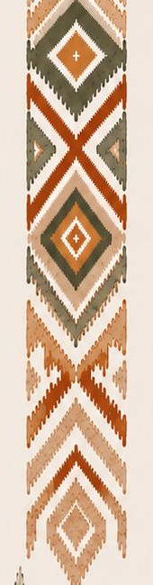
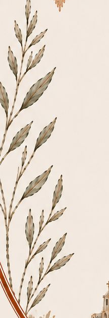
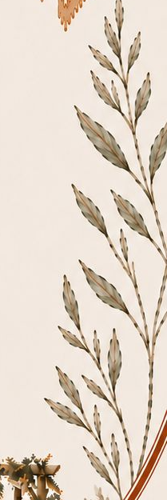
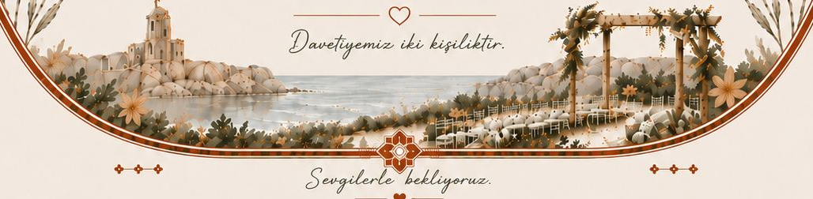

Birbirimizi Bulduk,
Ailelerimizle Bütünlendik.
Bu özel günümüzde sizleri de aramızda görmekten mutluluk duyarız.
Akşamımızın geç saatlere uzayacağını düşünerek, bu özel günümüzde miniklerimize İyi Geceler Diliyoruz.
